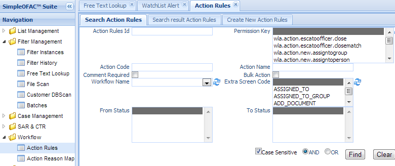

Action Rules¶
Action Rules define what actions the current alert can perform. It defines action code, action name, from status, to status, permission key, etc. These are the rules to move alert from one status to another.
Click the Action Rules Tab in the left navigation menu under Workflow and a new Action Rules Tab folder will be created in the right panel.
There are 3 sub-Tab folders, Search Action Rules, Search Result Action Rules and Create New Action Rules.
Search Action Rules¶
Search Criteria
| Field Name | Description |
|---|---|
| Action Rules Id | Action Rules unique record identifier. |
| Permission Key | The identifier link to permission table. It is used to enforce who can have access to this action. |
| Action Code | Unique code to identify this action. |
| Action Name | The Name of this action. |
| Comment Required | Check box to set if users are required to input comment when users perform this action. |
| Bulk Action | Check box to set if users are allowed to bulk perform this action. |
| Workflow Name | Select a workflow from the drop down list. |
| Extra Screen Code | Some action requires to display extra screen to allow users to input extra information. Select from the drop down list. |
| From Status | The current status. |
| To Status | The status after the action is performed. |
| AND | Select AND radio box if you want those criteria to be added together. |
| OR | Select OR radio box if you want to get the result if either criteria meet |
Functional buttons¶
- Find: – click the Find button to search.
- Clear:– click the Clear button to clear all the criteria.
Search Result Action Rules¶
The top part is the table which shows the list of the Action Rules that meet the search criteria. The bottom part is the details of the selected entry
Update/Delete Action Rules¶
Double Click the selected record in the table to modify this entry. A new Tab folder Update/Delete Action Rules will be added, as shown below.

Functional buttons¶
- Update: – make changes on the Action Rules, then save and switch back to the “Search result Action Rules” Tab. Some of the fields in this form are read only, like created/modified user and date.
- Reset:– reset the data to its initial value, discard all the changes.
- Cancel:– Cancel this change and switch back to the “Search result Action Rules” Tab.
- Delete:– Delete this entry, then switch back to the “Search result Action Rules” Tab.
Create New Action Rules¶
Select the “Create New Action Rules” Tab to create a new entry.
| Field Name | Description |
|---|---|
| Action Rules Id | Action Rules unique record identifier. |
| Workflow Name | Select a workflow from the drop down list. |
| Action Code | Unique code to identify this action. |
| Action Name | The Name of this action. |
| Description | Description of this action. |
| From Status | The current status. |
| To Status | The status after the action is performed. |
| Permission Key | The identifier link to permission table. It is used to enforce who can have access to this action. |
| Comment Required | Check box to set if users are required to input comment when users perform this action. |
| Bulk Action | Check box to set if users are allowed to bulk perform this action. |
| Extra Screen Code | Some action requires to display extra screen to allow users to input extra information. |
| Display Order | The order this action will display |
| CreatedByDate | Date and Time when the entry is created. It is a read only field. |
| CreatedByUser | User who create this entry. It is a read only field. |
| ModifiedByDate | Last modified date and time; It is a read only field. |
| ModifiedByUser | Last modified user; It is a read only field. |
Functional buttons¶
- Create: – Click the Create button to create a new Action Rules Tab and switch to the “Search result Action Rules” Tab.
- Clear:– Click the Clear button to clear all the fields.
- Cancel:– Click the Cancel button to cancel the operation and switch back to the “Search result Action Rules” Tab.